My House · C11
C10 corrected: every floor stands on something
Claude Code · 22 Nov 2026 · C10 with every correction of the 27-reviewer review and your rules of today (stmt-027, stmt-028, stmt-029) · ledger of all 108 corrections
The idea in one minute
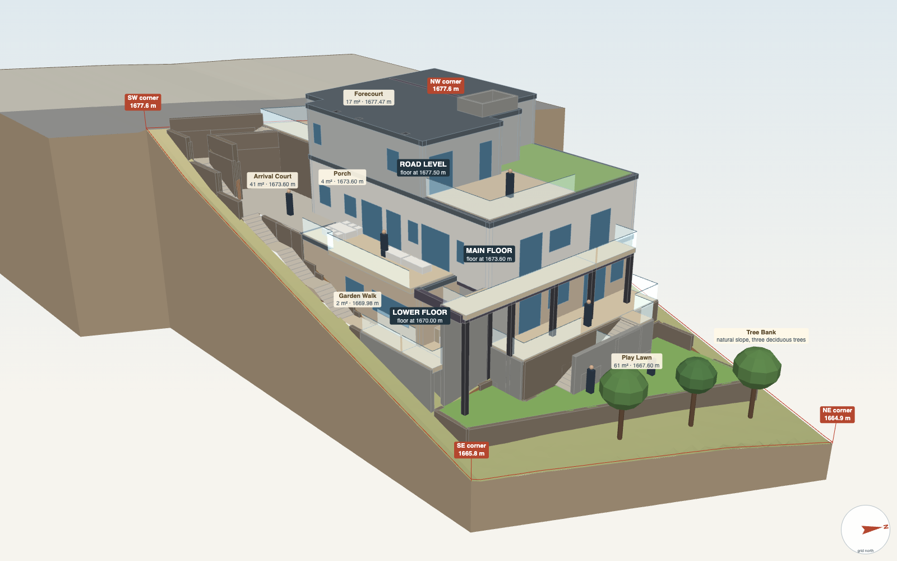
- The same house as C10, now buildable. Your stair and lift core, your room sizes and your three levels stay. What changed is what 27 specialist reviewers found could not be built, was unsafe, or broke one of your rules.
- Every floor stands on something. Under every part of the garage, the main floor, every terrace and every balcony there is now a wall, a column line or dug ground. No part stands over an undrawn void (rule 4.9).
- Your big arrival court. The ground west of the court and south of the forecourt is dug out. The stair from the road is at the far west, against the road: 12 easy steps, a corner landing, 12 more. Court with porch: 41 + 4 m².
- Easy stairs all the way down. From the court, 24 steps of 15 cm in three short flights take you to the garden walk at the lower floor; the walk runs on along the loggia's open front to the garden terrace, and 16 more steps of 15 cm reach the lawn. A script walks this whole route and checks every link. Every outdoor stair has landings, handrails both sides and guards.
- Real walls, real services. Walls are drawn at their real thickness (0.40 m outside). The water tanks moved from the roof of the kitchen to the ground under the garage; the hob has a duct to the roof; risers, drains and terrace build-ups are designed in.
- Rooms fixed. Dining seats 8 with chairs pulled out, the kitchen has 4 stools, the master's ensuite and dressing open from inside the bedroom, the laundry is compact (about 5 m²) with its own stores, and every lift door has a clear 1.5 m landing.
What stands on what: your three questions
You asked: “Garage stays on top of what? Also the main floor stays on top of what?” Here is the answer for every floor, terrace and balcony. Each answer is measured: a script walks every 25 cm of every slab and finds what holds it.
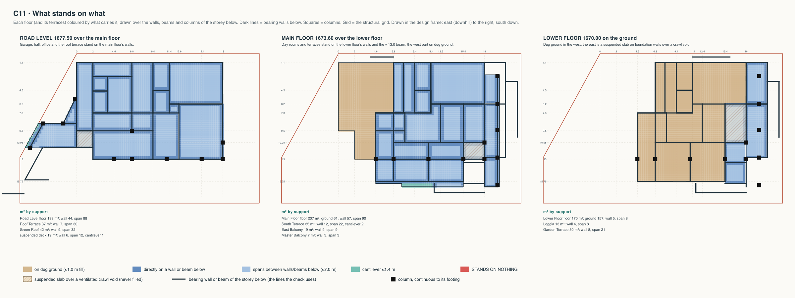
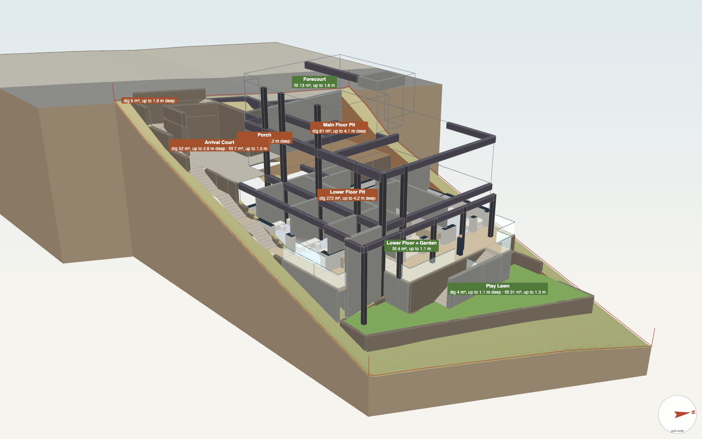
The 3D model
Drag to turn, scroll to zoom. “What stands on what” shows the columns and walls. Open full screen
Your field and the house on it
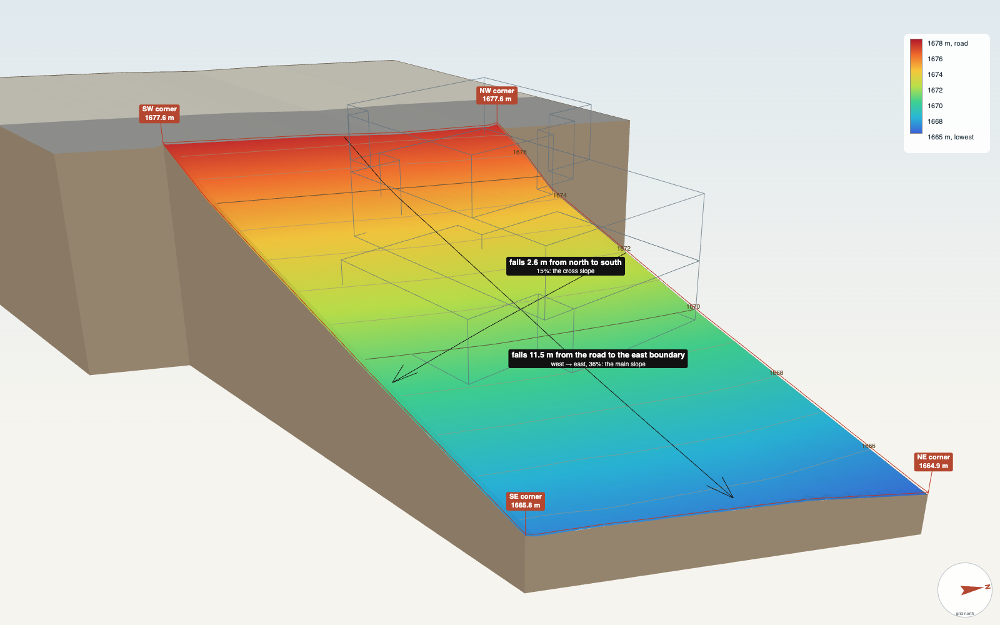

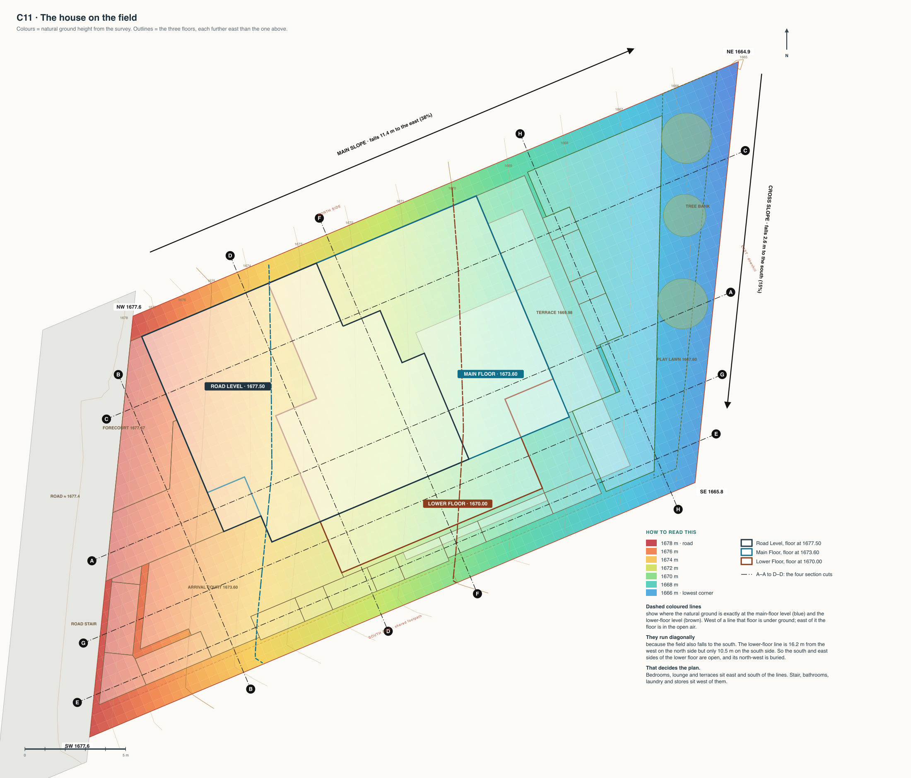
Road Level
You arrive here, by car or on foot. Floor 1677.50, level with the road.
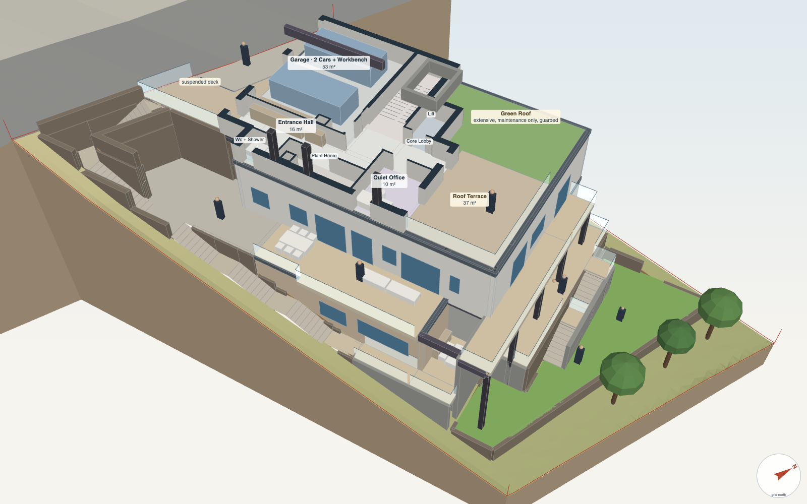
How this floor works
- Front door on the west façade under a canopy, straight into the entrance hall; the hall ends on the lit core lobby, the stair behind a glazed safety screen, and the roof terrace beyond.
- Groceries: garage → fire door → core lobby → lift is a 4.4 m walk, all indoors (rule 5.1). The 1.2 m unloading aisle along the east side stays clear.
- Two 3.35 m shutters lined up with the two car lanes; reverse in, drive out. LC300 in bay 2. A 4.1 m workbench along the back wall, bikes hung above it. The whole garage stands on the walls of the service room below.
- WC + shower sits over the main-floor entry and drains west to the road by gravity. Plant room 5.0 × 1.7 m (boiler with its own flue, cylinder, MVHR) with a 1.2 m door; water tanks are below, on the ground.
- Office 3.2 × 3.5 m on the roof terrace, walls on the grid lines u 9.4 / 12.6 and v 13.0.
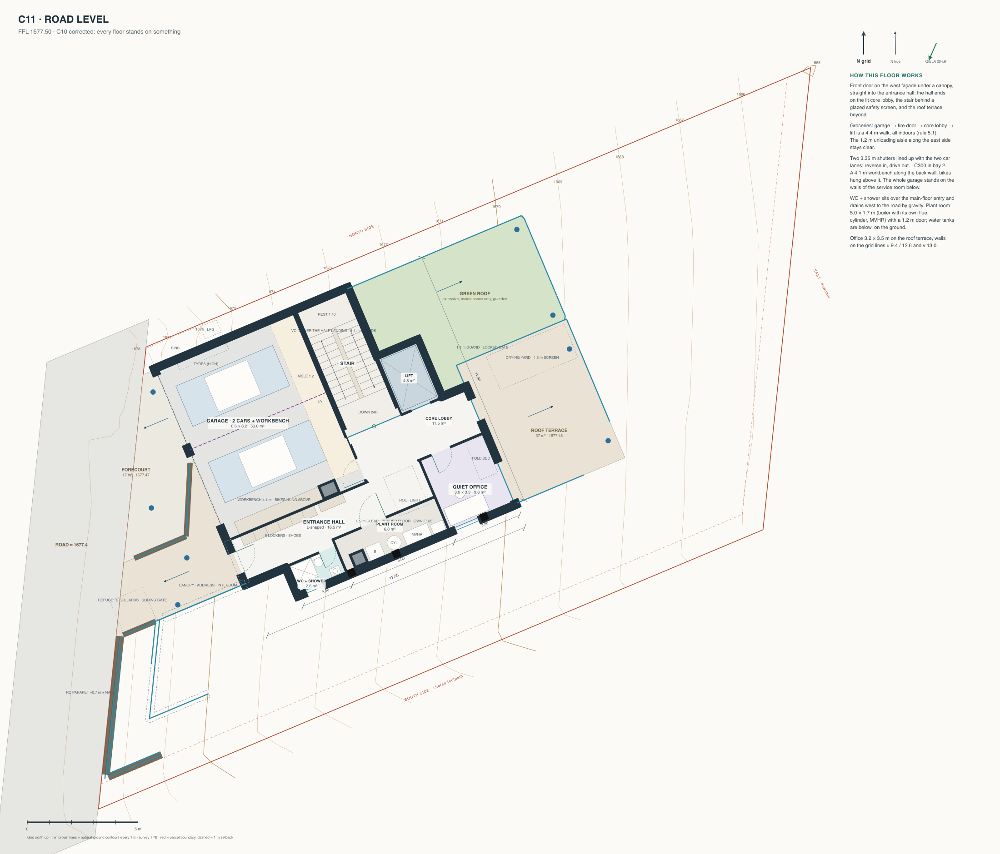
Room sizes on this floor
| Room | On the grid (m) | Clear inside the walls (m) | Clear area (m²) |
|---|---|---|---|
| Garage · 2 Cars + Workbench | 6.8 × 8.4 | 6.59 × 8.19 | 53.0 |
| Core Lobby | 5.8 × 2.2 | 5.59 × 2.08 | 11.5 |
| Entrance Hall | L-shaped | 16.5 | |
| Wc + Shower | 2.4 × 1.4 | 2.19 × 1.19 | 2.6 |
| Plant Room | L-shaped | 6.8 | |
| Quiet Office | 3.2 × 3.5 | 2.99 × 3.29 | 9.8 |
| Roof Terrace (outside) | 37 | ||
| Green Roof (outside) | 42 | ||
| Forecourt (outside) | 17 |
Main Floor
The family's day floor, one storey below the road. Floor 1673.60.
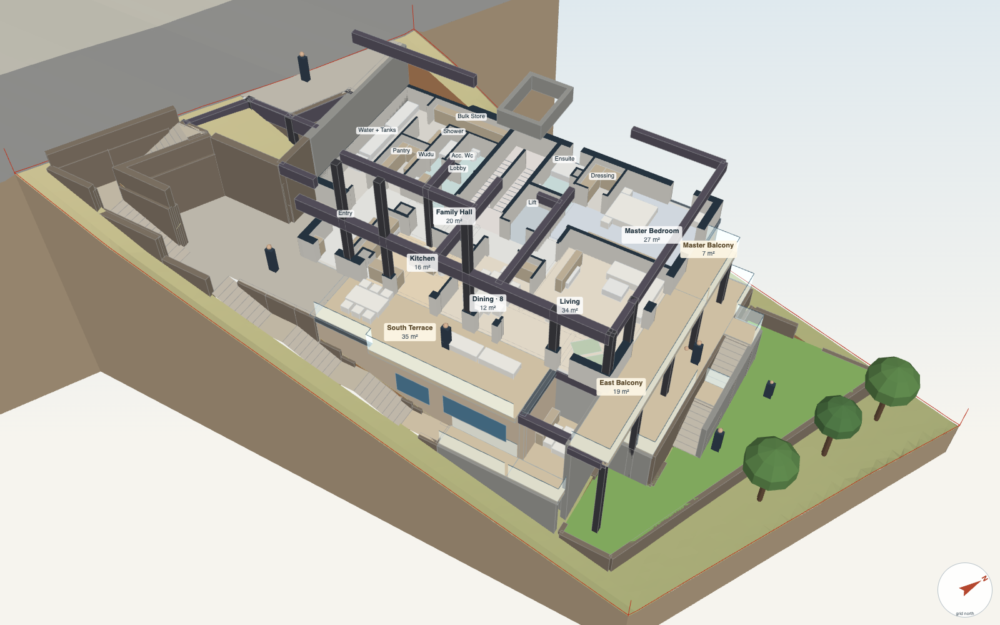
How this floor works
- Kitchen on the south: 2.0 m slider onto the south terrace and the sink under a south window (1.1, 1.2). Island with 3 stools for snacks; hob on the west run with a ducted hood up the fire-rated riser SH-K (1.3).
- Dining for 8 with chairs pulled out, open to the living room as one L (1.4, 1.5). Every main room opens off the family hall (2.1).
- Living 5.2 × 6.5 m clear: L-sofa in the sheltered NE corner behind a 200 mm wall; a 2.1 m bookcase screen with the TV stands opposite the hall opening, so the sofa does not look down the hall; prayer place in the SE with mats on the qibla (3.1, 3.3).
- Master suite: one door from the hall's recess into the bedroom; ensuite and dressing room each open from inside it (2.5). East balcony starts 1.5 m south of the north edge (Q5).
- Front door under the covered porch, facing the arrival court (2.6). The service room with the water tanks is dug under the garage, so the garage has walls under it.
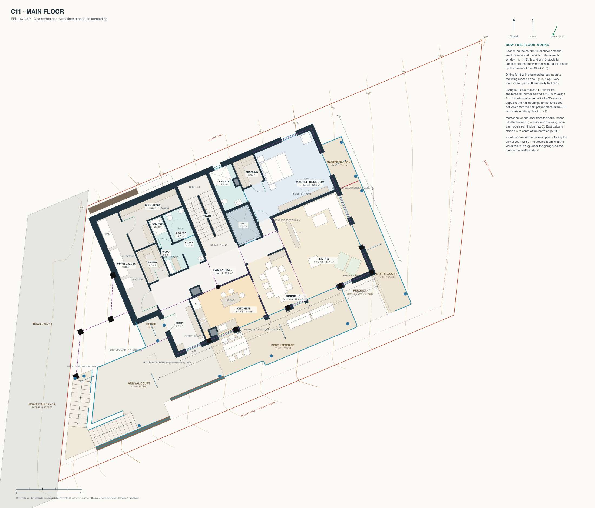
Room sizes on this floor
| Room | On the grid (m) | Clear inside the walls (m) | Clear area (m²) |
|---|---|---|---|
| Water + Tanks | 2.0 × 8.4 | 1.71 × 8.02 | 13.8 |
| Bulk Store | L-shaped | 9.6 | |
| Pantry | 1.8 × 2.7 | 1.68 × 2.58 | 4.3 |
| Shower | 1.2 × 2.4 | 1.03 × 2.23 | 2.3 |
| Acc. Wc | 1.8 × 2.4 | 1.67 × 2.23 | 3.7 |
| Wudu | 1.5 × 2.1 | 1.38 × 2.03 | 2.8 |
| Lobby | 1.5 × 2.1 | 1.32 × 2.03 | 2.7 |
| Ensuite | L-shaped | 5.4 | |
| Dressing | 1.8 × 2.3 | 1.68 × 2.09 | 3.5 |
| Master Bedroom | L-shaped | 26.9 | |
| Family Hall | L-shaped | 19.9 | |
| Entry | 2.4 × 3.5 | 2.19 × 3.29 | 7.2 |
| Kitchen | 5.0 × 3.5 | 4.88 × 3.29 | 15.6 |
| Dining · 8 | 3.2 × 4.2 | 3.08 × 4.04 | 12.4 |
| Living | 5.4 × 6.8 | 5.19 × 6.55 | 34.0 |
| South Terrace (outside) | 35 | ||
| Pergola (outside) | 9 | ||
| East Balcony (outside) | 19 | ||
| Master Balcony (outside) | 7 | ||
| Porch (outside) | 4 | ||
| Arrival Court (outside) | 41 |
Lower Floor + Garden
Children, grandparents, the lounge and the garden. Floor 1670.00.
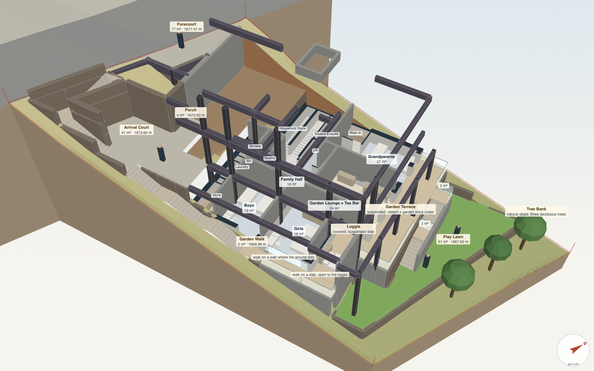
How this floor works
- Children's rooms keep your 4.3 × 4.8 m (two beds, two desks, two wardrobes each). Beds off the window wall; the south windows look over the garden walk, 2.4 m and more of open ground below the sill (4.8).
- Grandparents in the NE, their door beside the lift: twin beds with a 1.75 m transfer space, seated ensuite with a 1.5 m turning circle, walk-in, own 2.0 m slider to the garden terrace.
- Family bathroom: lockable door from the hall to the basins, then a separate shower (with a dry changing place) and WC. Compact laundry (about 5 m²) with its own store; household store under the stair.
- Garden lounge with tea bar; TV and tea bar on the wall lined by the grandparents' wardrobes. The hall keeps a clear landing in front of the lift.
- Your own way out: the stair from the arrival court runs down the south band (24 easy steps of 15.1 cm) to the garden walk, which runs on along the loggia's open front; through the loggia to the garden terrace, then 16 easy steps to the play lawn.
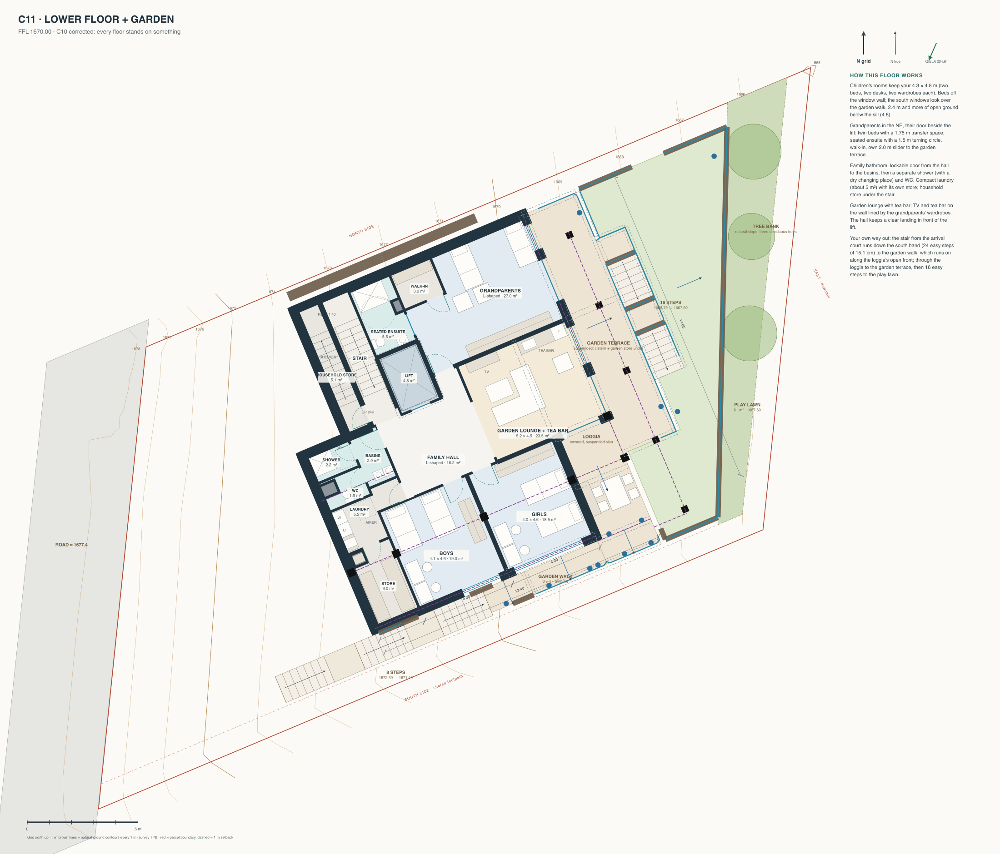
Room sizes on this floor
| Room | On the grid (m) | Clear inside the walls (m) | Clear area (m²) |
|---|---|---|---|
| Household Store | 1.2 × 6.2 | 0.88 × 5.85 | 5.1 |
| Seated Ensuite | L-shaped | 5.5 | |
| Walk-In | 2.0 × 1.9 | 1.88 × 1.61 | 3.0 |
| Grandparents | L-shaped | 27.0 | |
| Shower | 2.2 × 1.4 | 1.92 × 1.14 | 2.2 |
| Wc | L-shaped | 1.9 | |
| Basins | 1.4 × 2.5 | 1.28 × 2.38 | 2.9 |
| Laundry | L-shaped | 5.2 | |
| Store | L-shaped | 6.0 | |
| Family Hall | L-shaped | 16.2 | |
| Boys | 4.3 × 4.8 | 4.14 × 4.59 | 19.0 |
| Girls | 4.3 × 4.8 | 4.05 × 4.59 | 18.5 |
| Garden Lounge + Tea Bar | 5.4 × 4.7 | 5.19 × 4.55 | 23.5 |
| Loggia (outside) | 13 | ||
| Garden Terrace (outside) | 30 | ||
| Garden Walk (outside) | 2 | ||
| Play Lawn (outside) | 61 |
The arrival court and every outdoor stair
Your proposal (rule 4.10): dig out the ground west of the court and south of the forecourt, put the stair from the road at the far west against the road. Every outdoor stair is now easy (rule 4.11):
| Stair | Route | Flights | Landings | Width |
|---|---|---|---|---|
| Road Stair | road → arrival court | 12 × 164 mm / 320 mm + 12 × 158 mm / 320 mm | ≥ 1.4 m between flights, top and bottom | 1.40 m clear, both sides; canopy over L1 and F2 |
| Court Stair | arrival court → garden walk (lower floor) | 8 × 151 mm / 340 mm + 8 × 151 mm / 340 mm + 8 × 151 mm / 340 mm | ≥ 1.2 m between flights, top and bottom | 1.27 m clear, both sides |
| Lawn Stair | garden terrace → play lawn | 8 × 149 mm / 320 mm + 8 × 149 mm / 320 mm | ≥ 1.2 m between flights, top and bottom | 1.30 m clear, both sides |
The court is 40.6 m² open plus a 4.2 m² covered porch at the front door (C10: 34.0 m²). The reviewers estimated 51.6 m² with walls of no thickness; the real retaining walls (0.30–0.40 m) must stand inside your parcel and the 1 m south setback, and the road stair moved 0.30 m off the road for its own wall. That costs about 7 m². Water: the court falls 1:60 to a channel on its south edge with two gullies and a pipe down the garden stair band; a snow pit sits in its north-west corner.
Sections through the hill
Eight cuts in true scale, two ways, through every outdoor stair, the lift pit and the forecourt deck. Every column and wall is drawn from the same list as the plans and the 3D model.
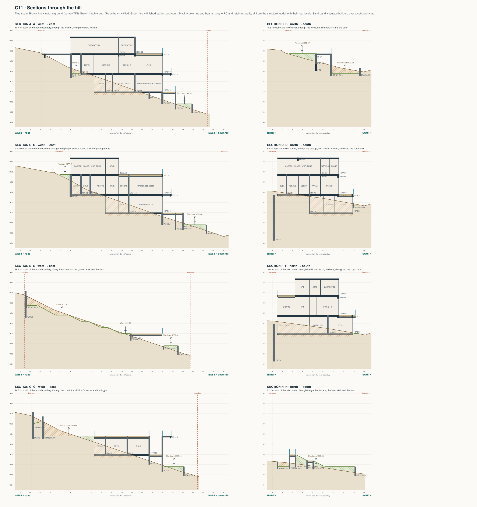
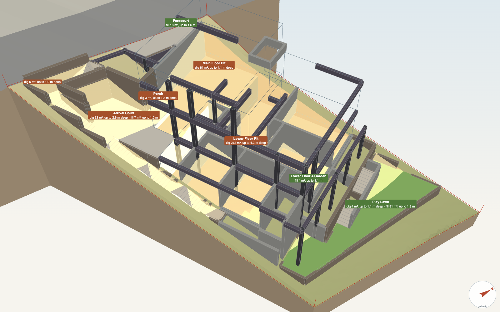
Earthwork
| Where | Area | Dig | Fill |
|---|---|---|---|
| Lower Floor dig | 158 m² | 272 m³, up to 4.2 m | – |
| Main Floor dig | 61 m² | 81 m³, up to 4.2 m | – |
| Forecourt | 17 m² | – | 13 m³, up to 1.6 m |
| Porch | 4 m² | 3 m³, up to 1.2 m | – |
| Arrival Court | 41 m² | 32 m³, up to 2.8 m | 7 m³, up to 1.6 m |
| stair landing | 4 m² | 5 m³, up to 1.9 m | – |
| Play Lawn | 61 m² | 4 m³, up to 1.1 m | 31 m³, up to 1.3 m |
| Total | ≈ 397 m³ | ≈ 51 m³ |
house_ai.geospatial.earthworks.integrate on the stored survey TIN (inferred surface); building formation 0.60 m below FFL (slab, gravel gas layer, insulation; GEO-04); suspended slabs stand over a crawl void dug to the same level; excludes footings, batters, bulking, drainage layers. Inferred from the survey TIN, not a soil survey.
C10 and C11 side by side
The table shows only what changed (areas on the grid lines, the one measure both designs share). Below it, the same floor of C10 and C11 side by side, with every room or terrace that changed outlined in orange.
| C10 18 Nov 2026 | C11 this design | |
|---|---|---|
| Kitchen (grid) | 16.1 m² | 17.1 m² |
| Dining (grid) | 11.9 m² | 13.6 m² |
| Living (grid) | 35.4 m² | 36.7 m² |
| Master bedroom (grid) | 24.2 m² | 29.5 m² |
| Main family hall (grid) | 23.3 m² | 21.8 m² |
| Grandparents (grid) | 23.0 m² | 29.9 m² |
| Garden lounge (grid) | 23.2 m² | 25.6 m² |
| Laundry (grid) | 15.0 m² | 6.2 m² |
| Lower family hall (grid) | 18.9 m² | 17.4 m² |
| Garage (grid) | 57.1 m² | 56.7 m² |
| Quiet office (grid) | 9.9 m² | 11.2 m² |
| Floors (grid): road / main / lower | 126 / 177 / 156 = 459 m² | 133 / 207 / 170 = 510 m² |
| Floor extents u: road / main / lower | 0.0–12.2 / 2.0–17.8 / 5.0–18.0 | 0.0–12.6 / 0.0–18.0 / 4.6–18.0 |
| Ground covered | 247 m² (41%) | 241 m² (40%) |
| Main-floor terraces | South Terrace 45, East Balcony 16, Master Balcony 8 = 69 m² | South Terrace 35, East Balcony 19, Master Balcony 7 = 61 m² |
| Arrival court | 34.0 m² | 40.6 m² + 4.2 m² covered porch |
| Earthwork (inferred) | cut 228 m³ · fill 124 m³ | cut 397 m³ · fill 51 m³ |
| Deepest building cut | 3.97 m | 4.22 m |
| What the garage stands on | 28.9 of 57.1 m² on main-floor walls; 28.2 m² on 0.4–4.1 m of air or loose fill (review 01/02/03) | all 133 m² of the road floor on walls and beams below (132 m²); 0 m² on nothing |
| What the main floor stands on | 119 m² on lower rooms, ~31 m² on dug ground, ~27 m² on nothing (master north strip, living over the loggia on 5–6 m posts) | 207 m²: 61 on dug ground, 147 on lower walls and beams, 0 on nothing |
| Road stair | 22 risers of 173 mm in one flight, no landing, beside a 3.8 m drop | 24 risers of 158–164 mm, 320 mm goings, 12 + 12 with a corner landing, 1.4 m clear, against the road |
| Court → garden | drops 2.30 m in a 2.0 m run; then a stepless path | 24 risers of 150 mm / 340 mm in three flights of 8 with 1.5 m landings, to the garden walk at the lower floor |
| Lawn stair | 14 risers of 170 mm in one flight, open sides | 16 risers of 149 mm / 320 mm, two flights of 8 and a 1.2 m landing, walls and handrails both sides |
| Walls drawn | 0.30 m outside, 0.12 m inside | 0.40 m outside (0.45 against earth), 0.25 RC core, 0.20 RC lift and acoustic walls, 0.12 partitions |
| Lift shaft (grid) | 2.0 × 2.3 m: too short for a stretcher | 2.0 × 2.8 m: 1.80 × 2.60 m clear, stretcher car |
| Water tanks | on the road level, over the kitchen | on the ground slab of the service room under the garage |
| Terraces over rooms | flush with the floor: no depth for waterproofing | structural slab set down 0.25 m for the inverted roof |
Unchanged (4 items)
| C10 18 Nov 2026 | C11 this design | |
|---|---|---|
| Pantry (grid) | 4.9 m² | 4.9 m² |
| Boys (grid) | 20.6 m² | 20.6 m² |
| Girls (grid) | 20.6 m² | 20.6 m² |
| East garden inside the setbacks | 147 m² | 147 m² |


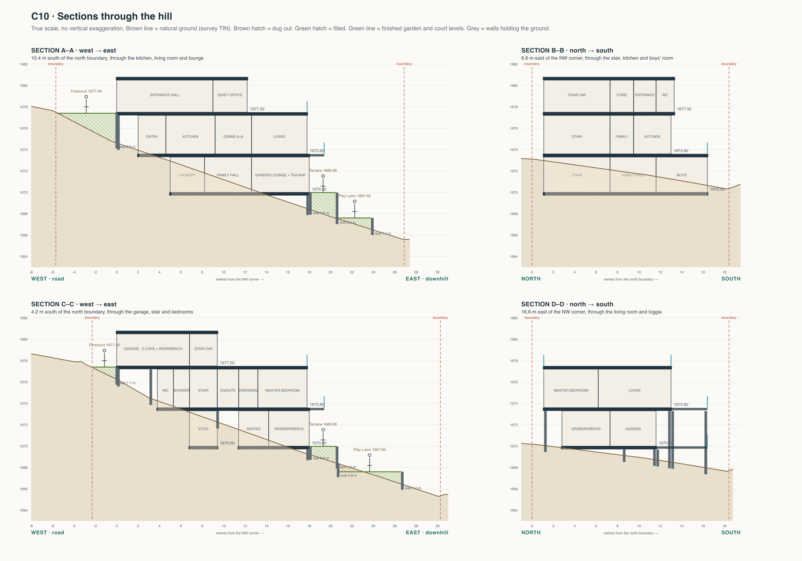

What 28 reviewers found, and the fix round
After C11 was drawn, 28 specialist reviewers checked it: the same 27 specialties as for C10, plus one who checked C11 against your own words and audited the corrections ledger line by line. Their reports and the merged result are in reviews/c11-expert-review-2026-11-22. The fix round that followed is at the end of CORRECTIONS.md.
| Review | fixed | partly | not fixed | worse | new blocker | new major | new minor |
|---|---|---|---|---|---|---|---|
| 01-structure-load-path | 7 | 5 | 0 | 0 | 1 | 7 | 3 |
| 02-seismic | 3 | 6 | 2 | 0 | 0 | 6 | 2 |
| 03-geotech-earthworks | 3 | 8 | 0 | 0 | 1 | 4 | 2 |
| 04-water-drainage | 2 | 10 | 2 | 0 | 1 | 4 | 3 |
| 05-site-access-external-stairs | 4 | 8 | 1 | 0 | 2 | 3 | 3 |
| 06-internal-circulation | 8 | 4 | 2 | 0 | 1 | 1 | 6 |
| 07-rooms-and-owner-rules | 8 | 6 | 0 | 0 | 1 | 5 | 6 |
| 08-sun-daylight-views | 2 | 7 | 1 | 2 | 0 | 4 | 3 |
| 09-thermal-energy | 0 | 11 | 1 | 1 | 0 | 3 | 3 |
| 10-mep-services | 2 | 8 | 3 | 0 | 0 | 6 | 4 |
| 11-life-safety | 3 | 12 | 1 | 0 | 4 | 3 | 1 |
| 12-accessibility | 5 | 6 | 2 | 0 | 2 | 2 | 1 |
| 13-privacy-acoustics-family | 6 | 8 | 1 | 0 | 0 | 6 | 2 |
| 14-landscape-garden | 1 | 8 | 3 | 1 | 1 | 4 | 2 |
| 15-constructability-cost-maintenance | 4 | 9 | 0 | 1 | 1 | 5 | 2 |
| 16-consistency-boundaries | 8 | 5 | 0 | 0 | 2 | 3 | 4 |
| 17-exterior-architecture | 2 | 7 | 2 | 0 | 0 | 3 | 4 |
| 18-interior-space-heights | 3 | 8 | 2 | 0 | 1 | 4 | 5 |
| 19-vehicles-garage | 0 | 9 | 2 | 0 | 2 | 3 | 4 |
| 20-kitchen-bathrooms | 5 | 9 | 2 | 0 | 2 | 3 | 5 |
| 21-regulations-neighbours | 1 | 5 | 5 | 0 | 0 | 5 | 4 |
| 22-hazards-resilience | 1 | 13 | 4 | 0 | 1 | 4 | 1 |
| 23-indoor-health | 0 | 11 | 0 | 1 | 0 | 5 | 4 |
| 24-flexibility-lifecycle | 1 | 6 | 3 | 0 | 1 | 2 | 2 |
| 25-household-operations | 2 | 10 | 1 | 0 | 1 | 5 | 4 |
| 26-brief-fidelity | 2 | 5 | 1 | 2 | 0 | 4 | 4 |
| 27-materials-durability | 1 | 9 | 3 | 0 | 1 | 4 | 3 |
| 28-owner-request-fidelity | 56 | 45 | 1 | 6 | 2 | 3 | 5 |
| C10 findings, reviewers 01–27 | 84 | 213 | 44 | 8 | 26 | 108 | 87 |
Reviewer 28 scored the ledger: 'fixed' = verified rows, 'worse' = rows it found overstated or false (6 of 108), all corrected in the fix round. New-finding counts are raw: several reviewers found the same problem.
What the fix round changed
- Both ensuite doors were blocked by a service riser: the riser moved; both doors are now clear (checked against risers and columns).
- The garden walk did not reach the loggia: it now runs on along the loggia's open front, and a new check walks the whole route road → court → garden walk → loggia → garden terrace → lawn.
- The guard check could never fail: rewritten. It now probes every edge of every terrace, roof, court, walk and stair, and re-checks independently; 237 m of guards are drawn, including a parapet on the road edge above the road stair.
- Glass was counted as a wall in the support check: no longer. A beam now carries the road level over the south glass, and lintel beams sit over the other large openings.
- The north pile wall overlapped the house wall and was too shallow: moved 0.45 m north with a drained gap, toes deepened to 1664.5–1669.0, caps stepped with the ground.
- Lower outer walls over the falling ground now have foundation walls down to sound ground; the SE corner has a column; the lawn-stair landings and the east garden walk are slabs on walls, not deep fill.
- The accessible WC now has a 1.5 m turning circle; the wudu bench no longer blocks the shower; the lower WC pan is out of sight of the hall.
- Living room: a 2.1 m bookcase screen with the TV now stands opposite the hall opening, so the sofa corner is sheltered (rule 3.1).
- Plant room enlarged to 5.0 × 1.7 m with its own flue; workbench 4.1 m; shutters lined up with the car lanes; the forecourt deck covers the whole strip behind the court wall.
- Gas (LPG) moved out of the sunk court to open air at road level; a refuge with bollards and a sliding gate at the road-stair head.
- Everything the drawings cannot show (build-ups, services, safety, materials) is written out in SPECIFICATION.md; the ledger's six overstated rows are corrected.
Rule check (rule 8.1)
Each of your rules, how it was checked, and the evidence. “Measured” means a script tested the geometry in design.py.
| Check | Status | Evidence |
|---|---|---|
| 2.3 no leftover holes · road | PASS · measured | enclosed leftover holes in the plate: 0 |
| 2.3 no leftover holes · main | PASS · measured | enclosed leftover holes in the plate: 0 |
| 2.3 no leftover holes · lower | PASS · measured | enclosed leftover holes in the plate: 0 |
| 1.1 kitchen → south terrace | PASS · measured | kitchen south wall is the façade; 2.0 m slider onto South Terrace |
| 1.2 kitchen on prime frontage | PASS · measured | kitchen spans u 4.4–9.4 on the SSE façade (bearing 158°) |
| 1.3 semi-open kitchen | PASS · measured | 2 doorless openings [('hall', 1.1), ('dining', 1.1)]; full-height walls otherwise; hood ducted up riser SH-K |
| 1.4 snacks in the kitchen for 3-4 | PASS · measured | 3 stools at the island |
| 1.5 kitchen 15-17 m², pantry 4-5 m², dining seats 8 | PASS · measured | kitchen 15.6 m² clear, pantry 4.3 m², dining clear 3.08 × 4.04 m: 2.2 × 1.0 m table with 0.9 m all round (2.8 × 4.0 m) fits = True; 8 chairs drawn |
| 2.1 every main room off a hall | PASS · measured | reachable without crossing another main room: {'dining': True, 'kitchen': True, 'living': True, 'master': True, 'boys': True, 'girls': True, 'guest': True, 'lounge': True} |
| 2.2 no long corridors | YOUR DECISION | main family hall 10.6 m long, 2.2 m deep in the west and 1.45 m in front of the dining; open 2.6 m to the stair, 2.2 m to the entry, 1.6 m to the dining, 1.2 m to the living. The kitchen, dining and living open off it, so it reads as a hall, not a double-loaded corridor. Lower hall 4.4 × 3.65 m, square. Your call (kept open since C10). |
| 2.4 no unnecessary doors (safety doors allowed) | PASS · measured | safety doors: [('garage', 'lobby-r', 'fire'), ('lobby-r', 'stair-r', 'screen')]; other doors are bedrooms, baths, stores, plant and the lockable door to the shared lower bathroom (§4c) |
| 2.5 master not through the closet | PASS · measured | bedroom door from ['hall']; dressing and ensuite each open from inside the bedroom (['dress', 'ens']) |
| 2.6 clear front doors | PASS · measured | road: 1.0 m door on the west façade facing the forecourt, straight into the 9.4 m hall that ends on the lit core lobby; main: 1.0 m door under the covered porch, facing the arrival court, into the entry, then the hall (one turn) to the stair |
| 3.3 living ~34 m², ≥5.0 m wide | PASS · measured | living 34.0 m² clear, 5.19 × 6.55 m; 5.0 m square fits = True |
| 3.1 cozy corner, north closed | designer's judgement | L-sofa in the NE corner against the 200 mm masonry wall (v 6.2); clerestory only above it |
| 3.2 living has its own hall entry | PASS · measured | 1.2 m opening from the hall, screened by a 1.1 m shelf |
| 4.2 lower floors reach at least as far east | PASS · measured | east edges road/main/lower u = [12.6, 18.0, 18.0] |
| 4.7 fits the field, ~150 m² east garden | PASS · measured | lower floor ends at u 18.0 (wall face 18.25); east garden 147 m² inside the setbacks; gross floor 510 m² |
| 4.3 terraces on the main floor, south and east | PASS · measured | 61 m² of main-floor terraces: {'South Terrace': 35.4, 'East Balcony': 18.9, 'Master Balcony': 6.7}; on the ['E', 'S'] sides; no north terrace or balcony |
| 4.4 digging ≤ ~4.5 m | PASS · measured | deepest building cut to formation 4.22 m (formation 0.60 m under the floor, C11-GEO-04) |
| 5.5 garage 55–60 m², closable, 2 cars | PASS · measured | garage 57.1 m² on the grid (53.0 m² clear inside 0.40 m walls, less the 0.4 m² riser box); two 3.35 m insulated shutters; reverse in, LC300 in bay 2; workbench and bikes on the back wall |
| 5.1 garage → lift indoors | PASS · measured | garage → fire door → core lobby → lift, 3.6 m |
| 5.3 stair at the heart | designer's judgement | the stair opens 2.6 m onto the hall on the road and main floors, 1.2 m on the lower; glazed screen only at road level |
| 5.4 step-free | designer's judgement | lift to all 3 floors; thresholds ≤20 mm with slot channels; step-free outdoor rooms: south terrace, garden terrace, loggia, garden walk |
| 6.5 master on the main floor + 3 lower bedrooms | PASS · measured | main ['Master Bedroom'] on the north side; lower ['Grandparents', 'Boys', 'Girls'] |
| 6.1 master ensuite; shared baths | PASS · measured | ensuite off the bedroom; lower family bathroom; grandparents' seated ensuite; main 4-part wet cluster with an accessible WC |
| 6.7 owner's 4.3 × 4.8 m children's rooms | PASS · measured | boys and girls 4.3 × 4.8 m on the grid, clear (4.14, 4.59) and (4.05, 4.59) inside real walls; 2 beds, 2 desks, 2 wardrobes each |
| 6.3 compact laundry, stores in sensible places | PASS · measured | laundry 5.2 m² (stmt-028); household store under the stair 5.1 m²; store beside the laundry 6.0 m²; bulk store under the garage 9.6 m² |
| 6.6 tea/snack bar downstairs | PASS · measured | tea bar counter with sink, fridge and kettle in the garden lounge |
| 6.4 bedrooms away from living areas | designer's judgement | 200 mm dense walls between the lounge and the bedrooms; TV and tea bar against the grandparents' wardrobes |
| 6.7b owner's 0109-r5 parts kept | designer's judgement | central stair + lift core with REST 1.40; 4-part wudu cluster; 4.3 × 4.8 m children's rooms side by side; grandparents' seated ensuite; lounge with tea bar; compact laundry + separate store; walk-in pantry; road: 2 bays, lockers, workbench, plant room, office + WC |
| 7.4 standard, comfortable sizes | designer's judgement | Master Bedroom 27; Kitchen 16; Dining · 8 12; Living 34; Grandparents 27; Boys 19; Girls 18; Garden Lounge + Tea Bar 24 m² clear |
| 4.1 south and east for day rooms | designer's judgement | kitchen, dining, living, children, lounge and the terraces face SSE or ENE; services, stores and the stair in the buried NW |
| 4.10 owner's full arrival court | designer's judgement | court 40.6 m² open + 4.2 m² covered porch (C10 34.0 m²); stair at the far west against the road |
| Doors clear of furniture · road | PASS · measured | 12 doors and openings checked with their swings; blocked: none |
| Doors clear of furniture · main | PASS · measured | 24 doors and openings checked with their swings; blocked: none |
| Doors clear of furniture · lower | PASS · measured | 17 doors and openings checked with their swings; blocked: none |
| Daylight in every main room · main | PASS · measured | windows and glazed outside doors per room: {'Master Bedroom': 2, 'Kitchen': 2, 'Dining · 8': 2, 'Living': 4} |
| Daylight in every main room · lower | PASS · measured | windows and glazed outside doors per room: {'Grandparents': 2, 'Boys': 1, 'Girls': 1, 'Garden Lounge + Tea Bar': 3} |
| Daylight in every main room · road | PASS · measured | windows and glazed outside doors per room: {'Quiet Office': 2} |
| 7.1 labels never overlap | PASS · measured | label collisions per plan: {'road': [], 'main': [], 'lower': []} |
The 22 new checks the reviewers asked for (CONSOLIDATED §7)
| Check | Status | Evidence |
|---|---|---|
| 4.9 / §7.1 every slab stands on something | PASS · measured | Lower Floor floor 170 m² (ground 157, wall 5, span 8, cantilever 0, NONE 0.0); Loggia 13 m² (ground 0, wall 4, span 8, cantilever 0, NONE 0.0); Garden Terrace 30 m² (ground 0, wall 8, span 21, cantilever 0, NONE 0.0); 2 m² (ground 0, wall 1, span 1, cantilever 0, NONE 0.0); 2 m² (ground 0, wall 0, span 1, cantilever 0, NONE 0.0); walk on a slab where the ground falls 4 m² (ground 0, wall 1, span 2, cantilever 0, NONE 0.0); walk on a slab, open to the loggia 3 m² (ground 0, wall 1, span 1, cantilever 0, NONE 0.0); Main Floor floor 207 m² (ground 61, wall 57, span 90, cantilever 0, NONE 0.0); South Terrace 35 m² (ground 0, wall 12, span 22, cantilever 2, NONE 0.0); East Balcony 19 m² (ground 0, wall 9, span 9, cantilever 0, NONE 0.0); Master Balcony 7 m² (ground 0, wall 3, span 3, cantilever 0, NONE 0.0); Road Level floor 133 m² (ground 0, wall 44, span 88, cantilever 0, NONE 0.0); Roof Terrace 37 m² (ground 0, wall 7, span 30, cantilever 0, NONE 0.0); Green Roof 42 m² (ground 0, wall 9, span 32, cantilever 0, NONE 0.0); suspended deck 19 m² (ground 0, wall 6, span 12, cantilever 1, NONE 0.0); Road-level roof 133 m² (ground 0, wall 31, span 101, cantilever 0, NONE 0.0) |
| §7.2 wall over wall | PASS · measured | bearing walls of the main and road storeys landing mid-span: 0 m; offsets 0.10–0.50 m: 0 m |
| §7.2b columns founded, beam ends supported | PASS · measured | 16 columns, 21 beams; problems: none |
| §7.2c lower walls reach sound ground | PASS · measured | lower outer wall points where the ground falls below the formation without a foundation wall under them: none |
| 4.11 / §7.23 every outdoor connection is possible | PASS · measured | fore → court-w: fore → fore-deck → rs-head → rs-f1 → rs-l1 → rs-f2 → court-w; court-w → walk-s: court-w → cs-f1 → cs-l1 → cs-f2 → cs-l2 → cs-f3 → walk-s; court-w → loggia: court-w → cs-f1 → cs-l1 → cs-f2 → cs-l2 → cs-f3 → walk-s → walk-m → walk-e → loggia; court-w → t-low: court-w → cs-f1 → cs-l1 → cs-f2 → cs-l2 → cs-f3 → walk-s → walk-m → walk-e → loggia → t-low; court-w → lawn: court-w → cs-f1 → cs-l1 → cs-f2 → cs-l2 → cs-f3 → walk-s → walk-m → walk-e → loggia → t-low → ls-top → ls-f1 → ls-l1 → ls-f2 → lawn; t-south → court-w: t-south → court-w |
| §7.3 one set of supports in plans, sections and 3D | PASS · measured | 63 columns and retaining/site walls; missing in plans none, in 3D none; sections draw 53 of them and nothing invented (none); ground steps ≥0.3 m without a wall: none; outdoor flights not cut by a section: none |
| §7.4 fill under ground-bearing slabs ≤ 1.0 m | PASS · measured | deepest fill under each ground-bearing slab: [('Lower Floor + Garden', 0.9), ('Main Floor', 0.35)]; suspended parts: lounge east, loggia, garden terrace, forecourt deck; deepest cut to formation 4.22 m (limit ~4.5) |
| 4.11 / §7.5 outdoor stairs easy to use | PASS · measured | rs-f1: 12 × 164 mm / 320 mm, 2R+G 0.648, run 3.52 m (needs 3.52), 1.40 m; rs-f2: 12 × 158 mm / 320 mm, 2R+G 0.637, run 3.52 m (needs 3.52), 1.40 m; cs-f1: 8 × 151 mm / 340 mm, 2R+G 0.642, run 2.38 m (needs 2.38), 1.27 m; cs-f2: 8 × 151 mm / 340 mm, 2R+G 0.642, run 2.38 m (needs 2.38), 1.27 m; cs-f3: 8 × 151 mm / 340 mm, 2R+G 0.642, run 2.38 m (needs 2.38), 1.27 m; ls-f1: 8 × 149 mm / 320 mm, 2R+G 0.617, run 2.24 m (needs 2.24), 1.30 m; ls-f2: 8 × 149 mm / 320 mm, 2R+G 0.617, run 2.24 m (needs 2.24), 1.30 m. Landings ≥1.2 m at top and bottom of every flight; handrails both sides. Problems: none |
| 5.2 / §7.6 one stair, same flights on every floor | PASS · measured | road→main 24 × 162.5 mm, main→lower 24 × 150.0 mm, every flight 12 risers / 11 goings of 309 mm over 3.4 m; 2R+G 0.634 / 0.609; 1.40 m landings; same box u 6.8–9.4, v 1.1–7.3 on all floors |
| §7.7 guard at every drop ≥0.6 m, 0.6 m clear in front | PASS · measured | 225 m of 1.1 m guards on every edge with a drop of 0.6 m or more (max drop 7.8 m); drops without a guard: none; furniture within 0.6 m of a guard: none; openings only at stair heads and gates |
| §7.8 terraces over rooms set down | PASS · measured | terraces over heated rooms with the structural slab set down: [('t-south', 29.7, 0.25), ('deck-r', 36.7, 0.25), ('green-r', 41.8, 0.25), ('loggia', 13.1, 0.2), ('t-low', 30.4, 0.2), ('ls-top', 1.7, 0.2), ('ls-l1', 1.7, 0.2), ('walk-m', 4.0, 0.2), ('walk-e', 2.9, 0.2)] (0.40 build-up − 0.15 floor = 0.25 m); every door onto them has a 150 mm slot channel and a ≤20 mm threshold |
| §7.9 water: falls, 2 outlets + overflow, never towards a door | PASS · measured | 17 outdoor surfaces, each with a fall, ≥2 outlets and an overflow; problems: none. Court outlet: channel + DN150 outfall. Garage floor falls 1 % to the shutters into a trench drain and interceptor. |
| §7.9b forecourt crest above the road edge | YOUR DECISION | Forecourt 1677.47 at the shutters falls to a channel at the boundary, but the road crown and gutter are not surveyed (F6). Confirm with a road survey before fixing the levels (Q6). |
| §7.10 clear routes, doors, lift landings | PASS · measured | 53 doors and openings checked with their swings; blocked none; narrow none; garage aisle u 5.54–6.74 × v 1.25–8.84 clear of cars and furniture: True ; 1.5 m circle at each lift door (level, wall m², furniture m²): [('road', 0.0, 0.0), ('main', 0.0, 0.0), ('lower', 0.0, 0.0)]; doorways narrowed by risers, columns or thick walls: none; furniture standing in a column: none |
| 4.8 / §7.11 2 m of open ground below every bedroom window | PASS · measured | highest finished ground or slab 0.3–2.0 m in front of each bedroom window or door, against the floor (sill +0.90): master (16.2, 1.1): -3.05; master (18.0, 4.1): -0.02; guest (18.0, 2.2): -0.02; guest (18.0, 4.3): -0.02; boys (9.8, 15.8): +0.40; girls (13.1, 15.8): -0.02 |
| §7.12 no window faces a void, a plinth or a wall within 2 m | PASS · measured | 13 windows checked; problems: none |
| 4.7 / §7.13 everything inside the envelope, walls included | PASS · measured | plates with their 0.25 m outer wall, terraces, stairs, platforms and site walls: outside nothing |
| §7.14 real walls and right sizes | PASS · measured | exterior walls 0.40 m (0.45 m against earth), core 0.25 m RC, lift 0.20 m RC, partitions 0.12 m, acoustic 0.20 m, all deducted. Living 5.19 m clear wide; kitchen 15.6 m²; pantry 4.3 m²; laundry 5.2 m² with separate stores ['store-u', 'store-s']; dining fits 2.8 × 4.0 m |
| §7.15 services: risers, hood duct, no WC or tank over the kitchen | PASS · measured | every wet room within 4.5 m of a riser (all); hob under riser SH-K, which rises through the road plant room to 1.0 m above the roof; wet rooms over the kitchen: none; tanks on the ground slab under the garage |
| §7.16 safety doors present; new doors justified | PASS · measured | garage fire door and the glazed stair screen are drawn. Doors not in C10, each a room door, a store or the safety doors: ['lower:guest→gwalk', 'lower:laundry→store-s', 'lower:stair-l→store-u', 'main:hall→master', 'main:hall→tanks', 'main:tanks→bulk', 'main:wudu→sh-m', 'road:lobby-r→office'] |
| §7.17 no straight view of a WC pan from a hall or the kitchen | PASS · measured | 5 pans ray-tested from every hall and kitchen opening (doors open); hits: none |
| 7.6 / §7.18 qibla and north on every plan; mats on the qibla | PASS · measured | every plan shows grid north, true north (grid + 0.78°) and the qibla 204.6° true (inferred from the owner-supplied point; CRS unconfirmed). 2 mats, off the qibla by [0.0, 0.0]° |
| §7.19 lift shaft, pit and overrun | PASS · measured | clear shaft 1.80 × 2.64 m on every floor (stretcher car, supplier to confirm); pit floor 1668.80 (1.2 m, tanked, gravity drain); overrun 0.8 m behind the roof louvre; 0.9 m automatic doors on the south face |
| §7.20 text matches the geometry | PASS · measured | 11 numbers in the notes recomputed; wrong: none. No 0110-r2 defect is marked fixed without a measured test. |
| §7.21 owner levels unchanged | PASS · measured | road 1677.50, main 1673.60, lower 1670.00; lawn 1667.60 (Q4 default) |
| §7.22 storeys per façade and coverage (reported) | designer's judgement | storeys seen above the finished ground: {'west (road)': 1, 'south': 3, 'east': 2, 'north': 2}; building cover 241 m² (40% of 600 m²), slab terraces and roofs 213 m², courts 62 m²; permit rules unknown (F5) |
Geometry hygiene: no overlapping rooms on any floor. Overlapping labels: {}.
Your decisions
Where a question is yours, C11 uses the reviewers' default and lists it here with my recommendation.
My recommendation: Ask a structural engineer after the boreholes; keep the plan as it is until then (the rooms do not change).
My recommendation: Move it to the south wall under a 1.5 m canopy, if you prefer a door you see as you come down the stair.
My recommendation: Keep it: the extra area is buried storage and structure, not a bigger-looking house. Or turn the service room into a ventilated void (saves no digging).
My recommendation: Translucent glass from the sill to 1.75 m on those windows (in SPECIFICATION.md), and a gate at the head of the court stair.
My recommendation: Keep the grandparents' sitting bay (they spend their days there); or make the north part of their room a store.
My recommendation: Keep the lower lawn; the pocket under the east balcony is now a covered play corner.
My recommendation: Keep both.
My recommendation: Keep 15 unless large gatherings are regular.
My recommendation: No new room.
My recommendation: Keep the lower lawn.
My recommendation: Keep v 2.6.
My recommendation: Survey the road crown and gutter every 3 m first; decide after.
My recommendation: Yes, and add a gate at the head of the court stair (see the walk privacy decision).
My recommendation: Wait for the title documents.
My recommendation: No.
My recommendation: No.
My recommendation: Keep, unless you want the strict reading.
My recommendation: SE living corner, as drawn.
My recommendation: No.
My recommendation: No.
My recommendation: No.
My recommendation: Accept it.
My recommendation: Accept the smaller court.
My recommendation: Keep 164 mm (well under the 175 mm limit).
My recommendation: Keep the sitting area; or ask for a store there instead.
My recommendation: Keep, with the fold-down bed.
Limits of this study
- Exploratory concept. Nothing is stored in the project record, and nothing is validated.
- The site is unconfirmed (UTM zone, datum, legal boundary). Heights come from a 27-point survey TIN; true north and the qibla are inferred from the owner-supplied point.
- Not engineered. The structure shown (columns, beams, RC and retaining walls, spans up to 7 m) is a geometric consistency check for an engineer to design, after boreholes, a frost-depth, groundwater and radon survey, and a road survey. Seismic design (Standard 2800) is not done.
- Not permit-ready, not construction-ready, not code-checked. The permit regime, coverage and height rules are unknown (F5).
- The foul sewer outfall is unknown: space is reserved for a pumped connection to the road, a gravity drain downhill, or a holding tank.
- Earthwork volumes are inferred from the TIN, without footings, batters or bulking.
Rebuild: .venv/bin/python projects/my-house/design/989_2026-11-22_claude-c11/build.py. Geometry and structure are in design.py; plans, sections, the support sheet, the 3D model and the checks are drawn from it.